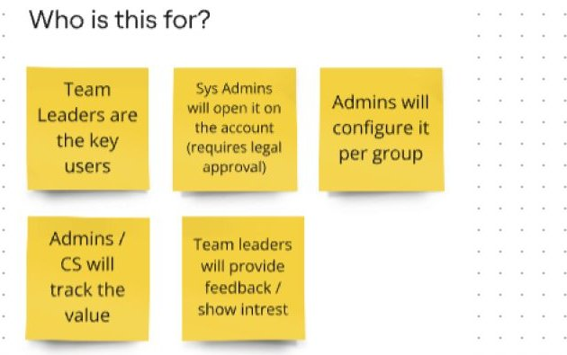
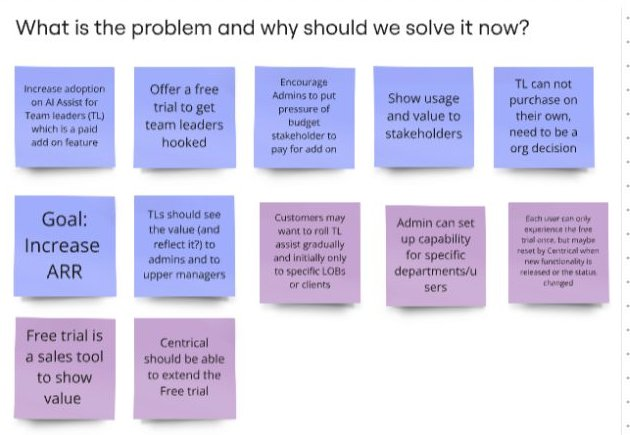

Designing a free trial for users who can't buy
Centrical's AI Assistant was a paid add-on for team leaders. But team leaders couldn't buy it: the purchase was an organization decision. I designed a 30-day trial that hooks the team leader and, at the same time, proves the value to the people who sign the budget.
- Role
- Product designer and project owner
- Product
- AI Assistant, a paid add-on
- Model
- B2B2C: the company buys, team leaders use
- Trial
- 30 days, with a possible 14-day extension
The user and the buyer are different people
Centrical's AI Assistant helps team leaders analyze their team's KPIs and get recommendations. The goal was to grow its adoption. Enterprise customers were hesitant to pay for an AI tool before they had seen what it does for their teams.
The obvious fix was a free trial, but a standard trial would not work here. A team leader can't purchase on their own. The decision sits with admins and upper management, who never use the assistant themselves. If only the team leader saw the value, the trial would end with a happy user and no sale.
Increase ARR by turning the AI Assistant add-on into a product organizations choose to pay for.
Team leaders need to see real value quickly, inside the work they already do.
Admins and budget owners need evidence: who used it, how much, and what it changed.
What I owned, and the rules of the system
- Ran the discovery with stakeholders: who it's for, why now, and how we propose to solve it.
- Designed two flows: the team leader flow and the admin flow.
- Planned the trial week by week, from first login to the extension or purchase.
- Designed the final UI inside the existing Centrical product.
I owned the project from discovery to final design, working with the PM, the developers and the rest of the product team. It was my final project at Centrical.
Treat the trial as a sales tool, not a countdown
I mapped the problem with stakeholders on three boards. The "who is this for" board made the split clear: team leaders are the key users, but admins configure the product, track its value and carry it to the budget owner.


That changed the design brief. The trial had to do two jobs at once:
- For team leaders: full capabilities from day one, no gated features, and a clear sense of how much time is left, so they build a habit fast.
- For admins: visibility into who is using it and the impact on their teams' KPIs, plus reminders at 21, 14, 7, 3 and 1 day left, so the value reaches the budget owner before the trial ends.
Other decisions came from the same board: after the trial ends, the assistant stays visible in a disabled state instead of disappearing, and the Centrical team can extend a trial when a deal needs more time.

A 30-day journey with a plan for every week
The experience principles were simple: reduce cognitive load, give value immediately, create a sense of progress, remove friction, and build confidence through guided exploration.
| Stage | What the team leader gets |
|---|---|
| Week 1 · Discovery | Onboarding checklist: connect data sources, first project, invite the team, a short tutorial. Daily nudges and quick wins. |
| Weeks 2–3 · Deep exploration | Advanced features introduced in context, usage-based recommendations, performance insights and comparisons. |
| Week 4 · Conversion | A proactive extension offer and usage-based qualification, with a clear path to purchase. |
| Extension | 14 more days, enhanced access, and a dedicated success consultation. |
Day 1: show the value in the first screen
The trial opens with a personal welcome and a live example of the assistant summarizing the team's performance, so the first thing a team leader sees is an answer, not a feature list.

Inside the daily work
The assistant lives where team leaders already work: next to team performance data and on the home dashboard. A small persistent reminder keeps the time left visible without getting in the way.


What I delivered
| Deliverable | For |
|---|---|
| A trial designed for two audiences: the team leaders who use it and the admins who buy it | Product and sales |
| Two complete flows: the team leader flow and the admin flow | Development |
| A week-by-week trial plan, from first login to extension or purchase | Product and Customer Success |
| Final UI inside the existing Centrical product, handed off to development | Development |
What I learned
In B2B2C, the person who loves the product and the person who pays for it are different people. Designing only for the user creates fans, not customers. The trial worked as a design problem only once it served both.